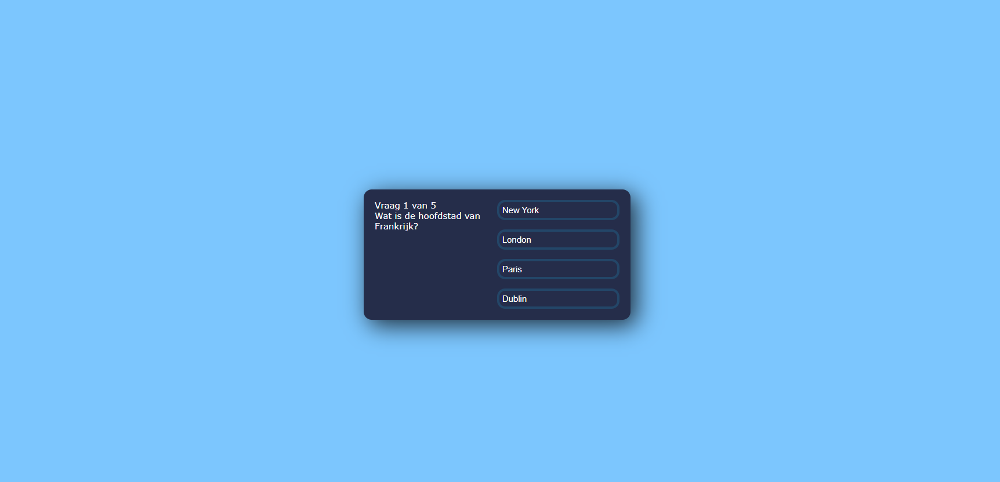

Dit was mijn eerste 'kleine' project waarbij ik basiskennis van Python gebruikte om een weerapplicatie te maken.
Ik maakte gebruik van HTML, Python en JSON-bestanden om de informatie om te zetten naar bruikbare gegevens.
Daarbij maakte ik gebruik van het Flask-framework.
Laravel: Tabel
Ik kreeg de opdracht om informatie om te zetten in een tabel met basisfuncties zoals ADD, DELETE en EDIT.
De voorraadwaarde wordt automatisch berekend door alle waarden bij elkaar op te tellen en af te ronden op twee decimalen.
WordPress
Ik heb basis kennis van WordPress om mooie paginas maken.

React Quiz Game
Aan het eind van mijn eerste schooljaar heb ik een eenvoudig quizspel
gemaakt met behulp van front-end tools zoals HTML, Cascading Style Sheets (CSS), JavaScript en het React-framework.
Ervaring
Mijn reis in de wereld van coderen begon met de basis van HTML en CSS, waar ik eenvoudige webpagina's maakte.
Daarna verkende ik JavaScript. Vervolgens dook ik in de wereld van back-end ontwikkeling, specifiek PHP,Python en later leerde ik werken met frameworks zoals Yii, Flask en Laravel.
Ik leerde ook hoe ik MySQL kon gebruiken om mijn code te verbinden met databases. Op dit moment ben ik bezig met het leren over FTP-servers.
Over mij
Mijn naam is Kacper. Ik ben 18 jaar oud en ben begonnen aan mijn avontuur in de wereld van software in 2022.
Momenteel volg ik de opleiding Software Developer aan het MBO College Amstelland in Amstelveen.
Mijn interessegebieden liggen in de ontwikkeling van AI, back-end en het gebruik van frameworks.